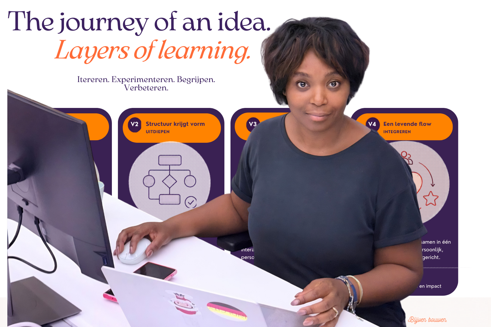

Over dit portfolio
Welkom bij een korte blik in passie projecten waarbij ik het leuk vind om nét even een andere insteek te nemen om ideeën om te zetten in iets wat je echt kunt zien, voelen of beleven.
Met hulp van AI experimenteer ik met concepten, verhalen, een beetje UX en interactieve ervaringen. Daarbij combineer ik creativiteit, structuur en techniek om ideeën simpel en creatief weer te geven.
De focus ligt op het verbinden van mens, kennis, data, zorg en digitale innovatie. Dit portfolio laat zien hoe ideeën kunnen groeien naar duidelijke concepten, visuele flows en werkende prototypes.
Vleugelslag
Een interactieve audio- en storytellingervaring waarin AI, muziek, metaforen en UX samenkomen tot een gelaagde experience.
Bekijk demoProjecten met treintje
Een visuele manier om processen, fases en routes begrijpelijk te maken. Laat workflowdesign en procesdenken zien.
Bekijk demo
“Sommige ideeën ontstaan niet in één keer. Ik laat ze iteratief en inuitief groeien laag voor laag, versie na versie.”
Van eerste experiment naar een denkmodel in beweging.
Achter veel prototypes zitten tientallen kleine probeersels, en verbeteringen. Niet alleen in design dat je elke keer iets verfraaid, maar ook in denkwijze, structuur en gebruikerservaring.
In deze sectie neem ik je mee naar hoe een eerste idee zich ontwikkelde tot een meer gestructureerde flow rond AI, zorg, UX en systeemdenken.
Het proces laat je letterlijk ervaren dat innovatie vaak ontstaat door itereren, vereenvoudigen, testen en opnieuw kijken. Inzicht opdoen is blijven reflecteren op hetgeen je doet.